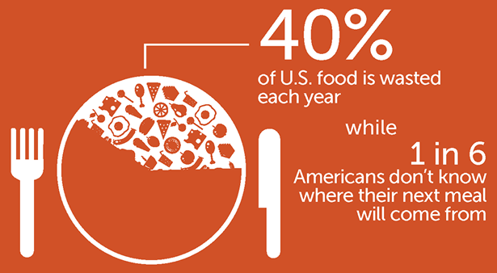

Our goal is to eliminate food waste through a series of solutions. If you have food that is nearly expired but not quite, set up a listing on our website, type in your location and match up with someone nearby who is looking for that food. If your food has already expired, check out our compost tab which contains information pertaining to composting the specific type of food you have. If you are nearing the expiration date of your food and don't know what to make with it, make a post and our users can comment a recipe they have enjoyed. If you are simply a food enthusiast and don't have any food to get rid of, browse through and comment a recipe you know of to another person's post!
